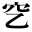

●夏目漱石『思い出す事など』
●島崎藤村『夜明け前 第一部上』
●南方熊楠『十二支考（１）虎に関する史話と伝説民俗』
●木下杢太郎『すかんぽ』
●正岡子規『寒山落木 卷一』
●森鴎外『舞姫』
| 1_89_50.gif |
●太宰治『惜別』 ●夏目漱石『思い出す事など』 |
|
| 1_89_51.gif |
●巖谷小波『こがね丸』 ●島崎藤村『夜明け前 第一部上』 ●南方熊楠『十二支考（１）虎に関する史話と伝説民俗』 |
|
|
|
1_89_54.gif |
●北原白秋『思い出 抒情小曲集』 ●木下杢太郎『すかんぽ』 ●正岡子規『寒山落木 卷一』 ●森鴎外『舞姫』 |
|  | 2_83_11.gif | |
| 2_83_13.gif |
●南方熊楠『十二支考（１）虎に関する史話と伝説民俗』 |
|
| 2_83_16.gif |
●南方熊楠『十二支考（１）虎に関する史話と伝説民俗』 |
| 0212_4957.gif |
●黒島伝治『武装せる市街』 |
|
| 0212_4962.gif |
●幸田露伴『平将門』 |